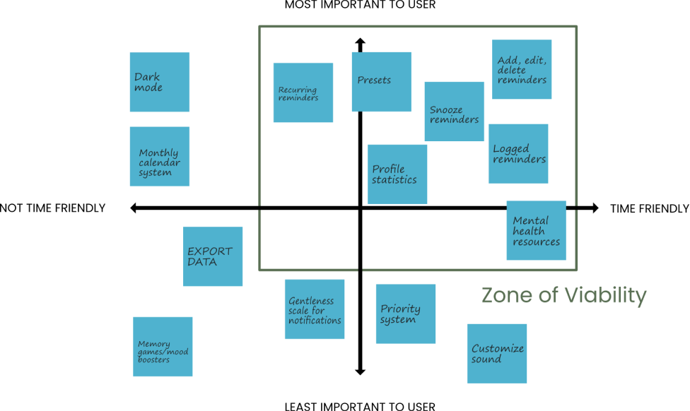

We used our research to create user personas to solidify our understanding of who we're designing for.


Using InVision's collaborative space, we used the 2x2 matrix method to determine our final feature set.
We eventually settled on the core featureset of:
- Add, edit, snooze, and delete reminders
- Set reminders quickly through a preset system
- Set recurring reminders
- Profile and general statistics to measure user growth and progress
- Log of completed reminders for peace of mind
- Mental Health resources

With this feature set, we created a screen map and some early wireframes
This screen map identified early on what our core flow would be for the user and helped guide us through our wireframing phase, where we would try to flesh out potential layouts and understand what UI elements would need to be designed.
We ended up doing a quick round of sketching followed by some very rough and ambiguous wireframes. These were more to identify the flow and highlight big picture navigation/interaction concepts that would be key to the final product.